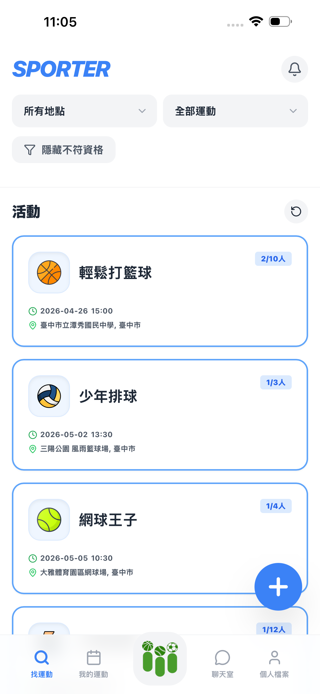
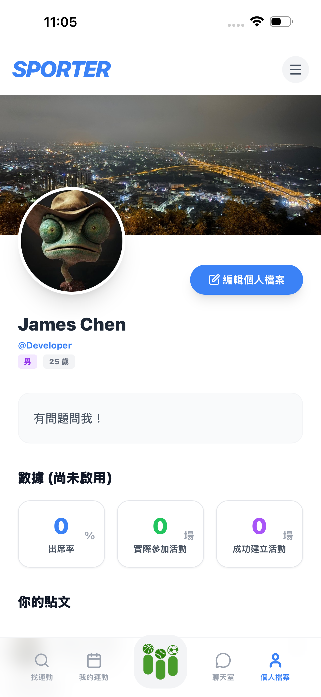

探索 Sporter 如何徹底改變你的運動生活

不再為了湊不齊人數而煩惱。Sporter 的智慧匹配系統能幫你連結附近的運動愛好者，不論是籃球、羽球還是慢跑，都能找到最佳拍檔。
和志同道合的朋友保持聯絡，進一步討論活動細節。

記錄你的運動歷史、項目與評價。在 Sporter 的社群中建立個人特色，讓運動真正成為你的生活風格。
將我們的網頁版 App 加入桌面，享受全螢幕、更快速的運動追蹤體驗。

使用 Safari (iOS) 或 Chrome (Android) 開啟 App 網址。

點擊瀏覽器工具列的「分享」或「選單」圖示。

選擇「加入主畫面」選項。

點擊「加入」或「新增」，Sporter 就會出現在你的手機桌面！